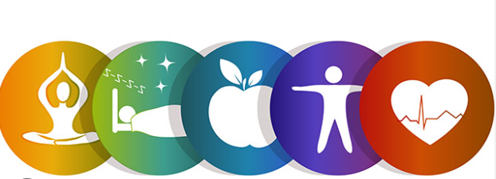
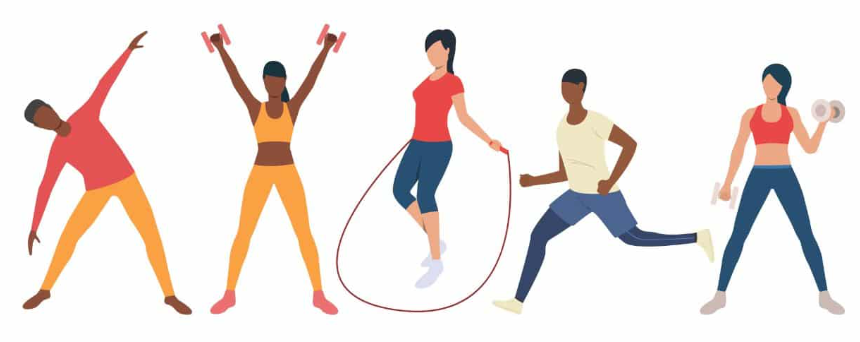

O que é Saúde?
Ter saúde vai além da ausência de doenças. De acordo com a Organização Mundial da Saúde (OMS), saúde é um estado de completo bem-estar físico, mental e social. Isso significa que para estar saudável, é importante:
- Bem-Estar Físico: O corpo deve estar funcionando adequadamente, sem doenças ou lesões. Isso inclui ter energia suficiente, boa resistência física, e cuidar dos sistemas do corpo (como o coração, pulmões e músculos).
- Bem-Estar Mental: Envolve ter uma mente equilibrada, capaz de lidar com o estresse, emoções e desafios da vida diária. Isso inclui a capacidade de pensar claramente, tomar decisões, e manter relacionamentos saudáveis.
- Bem-Estar Social: Relaciona-se à capacidade de interagir de maneira positiva com outras pessoas, sentir-se parte da comunidade, e ter boas relações interpessoais.

Dicas de Como Manter uma Boa Saúde
- Alimentação Balanceada: Consuma uma variedade de alimentos, incluindo frutas, legumes, proteínas magras, grãos integrais e gorduras saudáveis. Evite o excesso de açúcar e alimentos processados.
- Hidratação: Beba bastante água ao longo do dia. A quantidade ideal pode variar, mas cerca de 2 litros por dia é uma boa meta para a maioria das pessoas.
- Exercício Regular: Pratique atividades físicas regularmente, como caminhada, corrida, natação, yoga ou musculação. O ideal é fazer ao menos 150 minutos de atividade moderada por semana.
- Sono de Qualidade: Tente dormir entre 7 a 9 horas por noite. Um bom sono ajuda a manter o equilíbrio hormonal, a saúde mental e o sistema imunológico.
- Saúde Mental: Pratique meditação, técnicas de respiração ou atividades relaxantes para reduzir o estresse e a ansiedade.
- Check-ups Regulares: Consulte seu médico regularmente para monitorar sua saúde e prevenir doenças.
- Evite Hábitos Nocivos: Reduza ou elimine o consumo de álcool e tabaco.
- Cuide da Postura: Mantenha uma postura adequada, especialmente se trabalha sentado por longas horas.
